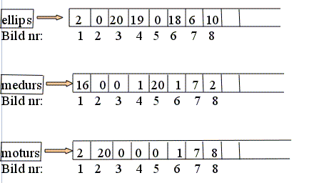
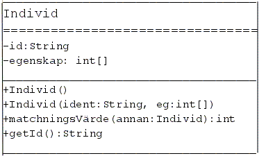

Uppgift 1 (6p)
a) Delar av klassen Calculate visas nedan. Det saknas en metod minMax som ska hitta det största och det minsta värdet i arrayen month, och sedan skriver ut dessa.
import java.util.*;
public class Calculate {
private int[] month = new int[12];
//Metoden minMax skall ligga här
public void mataIn() {
Scanner sc = new Scanner(System.in);
System.out.println("Mata in "+month.length+" tal:");
for (int i = 0; i < month.length; i++) {
month[i] = sc.nextInt();
}
}
public static void main(String[] arg) {
Calculate c = new Calculate();
c.mataIn();
c.minMax();
}
}
Din uppgift är att sätta ihop metoden minMax genom att välja från de 8 satsparen (1 - 8) nedan. Under kodsatser finns en figur med åtta linjer som ska fyllas i med kod. På varje linje ska det stå en sats. Från varje par ska du välja en sats (A eller B). Placera satserna du väljer i rätt ordning så att du får javakoden till metoden minMax som går att kompilera utan fel och som fungerar enligt beskrivningen ovan. Det kan finnas mer än en fungerande lösning.
1. A. System.out.println("Största värdet="+large+", minsta="+small);
B. return large, small;
2. A. public void minMax() {
B. public int minMax() {
3. A. if (month[i] > large)
B. if (month[i] < large)
4. A. int small, large;
B. int small = month[0], large = month[0];
5. A. large = month[i];
B. month = large;
6. A. for (int i = 1; i <= month.length; i++) {
B. for (int i = 0; i < month.length; i++) {
7. A. month[i] = small;
B. small = month[i];
8. A. if (month[i] < small)
B. if (month < small)
------------------------------------------- {
----------------------------------------
----------------------------------------{
----------------------------------------
-------------------------------------
----------------------------------------
-------------------------------------
}
---------------------------------------
}
b) Antag att följande kodfragment finns i ett program som går att köra. Skriv exakt vad programfragmentet kommer att skriva ut på skärmen om vi kör koden.
int x = 10;
while (x > 0) {
x = x - 3;
System.out.println(x);
}
c) Antag att följande sats finns i ett program som går att köra:
int x = (int)(Math.random()*10);
Skriv de satser som testar om heltalsvariabeln x ligger i intervallet 4 till 7, inklusive gränserna. Koden skall i så fall skriva ut "OK" på skärmen. Du behöver alltså inte skriva ett helt program, utan bara den kod som gör de saker som uppgiften kräver.
Uppgift 2 (6p)
Skriv en klass Sphere som representerar en sfär som har instansvariabler för positionen (x,y,z) och radien. Klassen skall dessutom innehålla:- En parameterlös konstruktor som skapar en sfär med positionen i origo och med radien 1.0.
- En konstruktor som har fyra parametrar för att skapa en sfär i en given position och med en given radie.
- En metod volume som beräknar och returnerar sfärens volym.
Volymen för en sfär är:

- En metod setRadius med en parameter som sätter ett nytt värde på radien
- En metod getRadius som returnerar värdet på radien
- En toString-metod som returnerar en sträng som innehåller värdet av alla instansvariabler. Strängen ska ge en förklarande text så att man förstår vad värdena betyder, t ex så här:
x=1.0, y=2.0, z=3.0, r=4.0
- Skapar en sfär s1 med den parameterlösa konstruktorn
- Skapar en sfär s2 med positionen x=1.0, y=2.0, z=3.0 och radien 4.0
- Ändrar värdet på s1's radie till 14.0 genom att anropa metoden setRadius.
- Beräknar och skriver ut s1's volym genom att anropa metoden volume.
- Tar reda på värdet av s2's radie genom att anropa metoden getRadius. Main-metoden skall skriva ut värdet.
- Skriver ut s2 med hjälp av toString-metoden.
Uppgift 3 (6p)
Det finns över en miljon bilder tagna på galaxer i universum. En uppgift för forskare i astronomi är att klassificera galaxerna utifrån deras utseende med avseende på vissa kriterier. Det kan vara svårt för en dator att göra klassifieringar som däremot det mänskliga ögat klarar, men man har beräknat att det skulle ta en student 3-5 år att klassificera bilderna enligt vissa önskade kriterier, om personen arbetade 7 dagar i veckan, 24 timmar per dag.Astronomer vid Oxford universitet har bett allmänheten om hjälp vid klassificeringen. Projektet som initierades 2007 kallas Galaxy Zoo, se http://en.wikipedia.org/wiki/Galaxy_Zoo
Projektet är internetbaserat, och deltagarna klassificerar bilder genom att klicka på olika alternativ när de ser en bild. Målet var initialt att varje bild skulle klassificeras av 20 olika användare för att få tillförlitliga data.
En klassificering som gjordes var att bestämma om en bild visade en elliptisk galax, en spiralgalax som går medurs, eller en spiralgalax som går moturs.
Din uppgift är att skriva klart klassen Galaxer som ska undersöka klassificeringen av 10.000 galaxer för ett visst forskningsprojekt. Klassen har tre instansvariabler som motsvarar klassificeringen ovan: ellips, medurs och moturs, som är arrayer som ska kunna innehålla 10.000 heltal. Varje element i arrayerna motsvarar en av de 10.000 bilderna på galaxer i studien. När en galax blir klassificerad av en person kommer motsvarande element i den array som motsvarar personens val att räknas upp. Varje galax klassificeras av precis 20 personer. Exempel:

Ovan illustreras början på arrayerna där varje element motsvarar en bild. Arrayerna har alltså 10.000 element var men bara de första elementen visas. 2 personer anser att bild 1 visar en elliptisk galax, 16 att den är en spiralgalax medurs och 2 personer anser att den är en spiralgalax moturs. Ingen anser att bild 2 är av typen elliptisk eller moturs - alla 20 personer anser att bild 2 visar en spiralgalax moturs, osv. Summan av elementen på motsvarande positioner i de tre arrayerna blir alltså alltid 20.
Klassen ska alltså innehålla:
a) De tre instansvariablerna som beskrivs ovan, ellips, medurs och moturs.
b) En konstruktor som skapar de tre arrayerna.
c) En metod public void mataIn(int bildNummer, int galaxTyp) som har två parametrar. Den första parametern talar om vilken bild man håller på att klassificera, t ex den första bilden. Den andra parametern talar om vilket val som gjorts, dvs vilken av de tre arrayerna som valts: om parametern galaxTyp har värdet 1 betyder det att personen valt elliptisk galax, om parametern är 2 är valet spiralgalax medurs, och 3 spiralgalax moturs. Valt element i vald array räknas upp med ett.
d) Vidare ska klassen ha en metod elliptiskaGalaxer som kontrollerar om någon eller några bilder är klassificerade av samtliga 20 personer som elliptiska. Metoden ska skriva ut numret på de bilder som har 100% samstämmighet att de visar elliptiska galaxer. Ovan ser vi att bild 3 är klassificerad av samtliga 20 personer som elliptisk. Metoden returnerar inget värde.
e) Klassen ska även ha en metod antalAvTyp som har två parametrar: en som motsvarar hur många personer som krävs för att man ska anse att det är en viss galaxtyp, och en parameter som talar om vilken galaxtyp man vill undersöka, dvs om man är intresserad av elliptiska galaxer, spiralgalaxer medurs eller spiralgalaxer moturs. Om t ex den första parametern är 18 och den andra parametern är 1 ska metoden gå igenom arrayen ellips och beräkna hur många av bilderna som valts av 18 personer eller fler. Detta antalet ska returneras.
Uppgift 4 (6p)
Antag att det i en population finns ett antal individer och att varje individ har en identitet och en uppsättning av egenskaper. Varje egenskap har ett värde som kan vara 0-9. Antag också att antalet egenskaper alltid består av 10 st värden. Inom populationen ska vi nu matcha ihop par av individer som passar bäst, dvs vars egenskaper är mest lika.
Ett exempel:
En individ A kan ha följande egenskapsvärden: 9, 0, 0, 2, 3, 7, 0, 9, 5, 5.
En individ B kan ha följande egenskapsvärden: 9, 0, 0, 1, 3, 7, 0, 9, 5, 8.
Matchningen beräknas genom att vi summerar alla kvadrater på skillnaderna mellan värdena för individerna. En matchning mellan individ A och B ger matchningsvärdet 10 eftersom:
(9-9)2 + (0-0)2 + (0-0)2 + (2-1)2 + (3-3)2 + (7-7)2 + (0-0)2 + (9-9)2 + (5-5)2 + (5-8)2 = 1+9=10
En simulering av matchning i en population med 50 st individer ska utföras. Populationen ska först skapas där varje individ får en identitet och tio st egenskapsvärden. Därefter skall det par av individer som har lägsta matchningsvärdet skrivas ut.
För simuleringen behövs tre klasser: Individ, Population och SimuleraMatchning. Klassen SimuleraMatchning som bara innehåller en main-metod som utför själva simuleringen är given:
Kim20 och Kim34 passar bäst. Matchningsvärdet=13Klassen Individ finns given som ett klassdiagram:

Uppgift:
a) Skriv klassen Individ i java så att den passar klassdiagrammet.
b) Skriv klassen Population i java så att den passar den givna mainmetoden och klassen Individ.